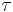
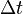
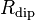
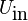

Microcontroleurs
Sommaire
[masquer]Introduction
Présentation Arduino
Un Arduino est en fait l'assemblage de deux éléments : un microcontroleur et une plaque sur laquelle il est connecté et permet d'utiliser facilement ses entrées/sorties. Le plan de conception de la plaque est opensource, et c'est un des aspects qui a lancé l'angouement pour l'Arduino il y a quelques années.
{kind=link}
On peut décrire rapidement les éléments importants de la photo de l'Arduino Uno:
- Dans les expériences à l'agrégation, on communiquera et on alimentera l'Arduino avec le port USB en le connectant à un ordinateur.
- Le microcontroleur a 6 entrées analogiques. C'est en général sur ces fiches qu'on branche les capteurs externes.
- Il a également de nombreuses entrées/sorties numériques, donc qui permettent de recevoir ou d'envoyer des 0/1.
- Pour les circuits électriques, on utilise en général la fiche 5V d'alimentation, et une fiche GND (masse).
- On peut remettre à zéro l'Arduino en appuyant sur le bouton Reset.
Présentation breadboard
Afin de câbler les dipôles et les capteurs au microcontrôleur, on utilise une plaque appelée breadboard (cf. photo). Sur le breadboard, certaines fiches sont reliées les unes aux autres : toutes les fiches d'une ligne sont électriquement liées. Les fiches sur les colonnes externes de la plaque sont également reliées, on les utilise pour l'alimentation si besoin.
{kind=link}
Composants
On utilise différents types de composants avec l'Arduino :
- des dipôles "nus" simples comme des résistances, des condensateurs. Au passage, les résistances étant nues, il faut utiliser le code couleur pour déterminer la valeur de R ;
- d'autres dipôles (diodes, etc.), des tripôles (transistor, etc.) ou des quadripôles (boutons poussoirs, etc.) qu'on utilise également sur le breadboard ;
- des éléments utilisés comme des capteurs, par exemple des photorésistances ou thermistances dont la résistance varie lorsque l'éclairement ou la température change. L'Arduino ne mesure que des tensions, il faut donc souvent un circuit électrique pour convertir la grandeur de mesure (ici la résistance) en tension. On utilise très régulièrement des ponts diviseurs de tension.
- enfin des capteurs fournis avec l'électronique qui permet de lire directement une tension. Ces capteurs utilisent une connectique différente, peut-être plus pratique que les fils simples : la connectique "Groove". Il suffit de relier le capteur au shield de la carte Arduino avec un seul cable, et celui-ci transmet l'alimentation et les entrées/sorties du capteur directement. C'est très pratique. Les entrées "A..." sont des entrées analogiques, et les "D..." des entrées/sorties numériques.
Les capteurs Groove :
- sont issus du Sensor Kit. Toutes les fiches pratiques sont sur ce site.
- Sonde à effet Hall
- Télémètre à ultrasons
- Capteur de température
- Pressiomètre
{kind=link}
{kind=link}
Soft
Afin de programmer les microcontroleurs type Arduino, on utilise le logiciel IDE Arduino qui permet d'écrire le code dans le langage d'Arduino (dérivé de C), de le téléverser sur le microcontroleur, et de récupérer les informations récupérées via le port Série.
Pour bien prendre en main l'interface, l'onglet "Outils" est important :
- Port : permet de spécifier (ou connaître) le nom du port série où est connecté le microcontroleur ;
- Type de carte : Permet de préciser le type de carte utilisé (ici uniquement des Arduino Uno)
- Moniteur série : Permet d'afficher le rendu du port série. C'est grace à ce moniteur qu'on obtient le retour de l'Arduino.
- Traceur série : Idem que le moniteur série sous la forme d'un graphique.
Lorsqu'on écrit un code, on peut tester sa compillation en cliquant sur l'icône Vérifier. Puis, lorsqu'on est prêt à le transférer au microcontroleur, on peut cliquer sur Téléverser.
Langage
L'objectif n'est pas ici de faire un cours détaillé sur le langage Arduino. On va très pragmatiquement expliquer le fonctionnement d'un code.
Un code Arduino est composé de trois parties essentielles :
- la définition des variables globales qui peuvent être de différents types (dont int, float et d'éventuelles variations long, unsigned long, etc.)
- l'initialisation dont le texte est contenu dans la fonction setup(). On y place les définitions des fiches (les pin) utilisées sur la plaque, la vitesse de communication avec le port série. Ensuite on peut y trouver des définitions comme ci-dessous.
void setup() {
pinMode(8, OUTPUT); // alimentation du circuit
Serial.begin(9600);
digitalWrite(8,HIGH);
Serial.println("Debut des mesures");
startTime = millis();
}
- une fonction loop() qui contient tout le reste du programme, et qui comme son nom l'indique va se relancer à l'infini tant que l'Arduino est connecté. Cette boucle va contenir toutes les instructions ("lit la valeur du capteur", "change le statut de telle pin", "attends x millisecondes", etc.)
On utilise très souvent des tests avec if else.
Quelques fonctions très utiles :
- Serial.printLn(x) : permet d'afficher la valeur de x dans le moniteur série.
- digitalWrite(pin1, HIGH) : permet de changer le statut de pin1. Les deux modes possibles sont HIGH (1) et LOW (0)
- analogRead(pin2) : permet de lire la valeur de pin2, une fiche a priori analogique.
Utilisation des dipôles "nus" : exemple de la charge d'un condensateur
L'intérêt des microcontroleurs type Arduino réside dans le fait de pouvoir être utilisé avec des dipôles "nus", et établir des connexions directement sur le breadboard.
On propose une expérience très simple permettant de mesurer la capacité d'un condensateur à l'aide d'un circuit RC.
Protocole :
- Brancher sur le breadboard une résistance et une capacité en série de telle sorte que  soit de l'ordre de 0,1s.
- Brancher l'entrée du circuit à la PIN 8 de l'Arduino, la sortie à une broche de masse (Ground) et envoyer la tension aux bornes du condensateur à l'entrée "Analog In" A0.
Programme : Le programme condensateur_Montrouge réalise les étapes suivantes :
- Initialisation : on définit la pin 8 une pin active de sortie, on connecte le microcontroleur au port série, puis on éteint la pin 8 si jamais elle était allumée. On attend 1000ms. Puis on impose une tension sur le système via la pin 8.
- Boucle : on a défini un pas de quantification (la variable "intervale"). Après ce , on regarde si le condensateur est en charge (état 1), décharge (état 2), ou si l'expérience est finie (état 3). Pendant la charge, on affiche la tension sur le moniteur série, jusqu'à ce que la tension atteigne 63% de la tension maximale (à savoir 1023). On mesure le temps écoulé, on obtient directement . Puis on décharge le condensateur en basculant dans l'état 2. Et on recommence l'expérience en basculant dans l'état 1 sauf si on a fait suffisamment de fois l'expérience.
Valeurs : On peut utiliser un condensateur de 100nF avec une résistance de 1MOhm par exemple, on obtient un temps caractéristique de 0,1s. La répétition de l'expérience montre que la valeur obtenue pour le temps de montée est stable. Choisir des composants tels que est plus petit peut mettre en avant l'intérêt de répéter l'expérience, et de faire une moyenne des valeurs obtenues (incertitudes statistiques de type A).
Utilisation d'un pont diviseur : le cas d'une thermistance
Il est fréquent que le transducteur utilisé convertisse la grandeur d'intérêt en autre chose qu'une tension, par exemple une variation de sa résistance (thermistance, Pt100, photo-résistance, etc.) Dans ce cas assez courant, on cherche à "transformer" une résistance en tension, et on utilise un pont diviseur de tension. L'idée est de mettre en série une résistance R connue et le dipôle dont la résistance  varie autour de la valeur de R. En appliquant une tension  à l'ensemble (5V par exemple), on mesure la tension aux bornes du dipôle qui vaut
On obtient ainsi la valeur de la résistance
Après il faut connaître le lien entre la variation de la résistance et la grandeur mesurée. Pour les thermistances fournies avec le setup Arduino, on pourra aller voir la fiche technique (pénible). Sinon on peut utiliser des thermistances de la collection.
Les capteurs connectique Groove
Avec la connectique Groove, on peut faire facilement du "plug and play": on branche délicatement le shield sur l'Arduino, on connecte les capteurs, on copie colle les programmes adaptés pour chaque capteur dans l'IDE Arduino et le moniteur série donne accès aux valeurs du capteur.
Vérification de la relation pression/volume
Prenons l'exemple d'une manipulation au programme de lycée : la loi de Boyle-Mariotte. On utilise le pressiomètre (description et specs sur le site Gotronic).
Après avoir placé délicatement le shield sur la carte Ardunio, connecter le capteur au shield. Téléverser le programme sur le microcontroleur, il permet d'afficher la valeur de la pression dans le moniteur série. Le capteur nécessite une phase d'étallonage, au minimum en prenant la pression atmosphérique. Consulter la fiche technique.
Loi de Boyle-Mariotte
Afin de vérifier que pour un système fermé à température constante, pV = cste, on connecte simplement le capteur à une seringue dont le piston est placé à mi-course. Cela permettra d'augmenter ou diminuer la pression tout en restant dans une gamme raisonnable de pressions pour le capteur (0,5 à 2 bar). Mesurer la pression pour différentes positions du piston. Lors de l'ajustement de la courbe P=f(V), attention à considérer l'intégralité du volume du gaz (en particulier celui dans le tube !)
Un détecteur de distance à ultrasons
Un autre exemple d'utilisation des capteurs avec la connectique Groove : le capteur de distance. Celui-ci utilise un émétteur et un récepteur ultrasons pour mesurer sa distance à un objet. On peut montrer le concept de la mesure, estimer des incertitudes et limitations de la mesure, etc.
Aller plus loin ? L'Arduino autonome
Un intérêt important aux microcontroleurs est qu'ils peuvent être utilisés en autonomie :
- soit en tant que capteur autonome, dont on récupérera les données ultérieurement ;
- soit en tant que "mini-ordinateur", le microcontroleur peut agir sur des actionneurs en fonction des retours donnés par ses capteurs, et ainsi faire des rétroactions automatiques. Par exemple en gardant la tenmpérature d'une enceinte, une intensité lumineuse ou une vitesse de rotation constante, ou en réagissant lorsque qu'une grandeur dépasse une valeurs seuil pré-déterminée.
Un exemple d'utilisation autonome : alimenter l'Arduino avec des piles, connecter le capteur de pression atmosphérique et un écran à cristaux liquides. En plaçant l'ensemble dans la cloche à vide, on peut mesurer la pression en fonction du temps, voire l'enregistrer.
Rq : il n'y a pas (pour l'instant) de programme correspondant à cette expérience. N'hésitez pas à l'écrire.
Limites
Les limites d'un microcontrôleur sont les mêmes que les limites d'un AO par exemple. On va avoir des limites en courant, en fréquence. On va également avoir une numérisation bien visible (les Uno sont en 10 bits, donc avec seulement 1024 valeurs différentes). On peut mettre en évidence cette numérisation ou la limite d'échantillonage en montage.
Notez que les limites ne sont pas des limites "fondamentales", mais simplement des limites matérielles dues à l'utilisation de tel ou tel microcontroleur (celui d'Arduino Uno est particulièrement médiocre, ce qui permet de mettre facilement en évidence ses limitations !)